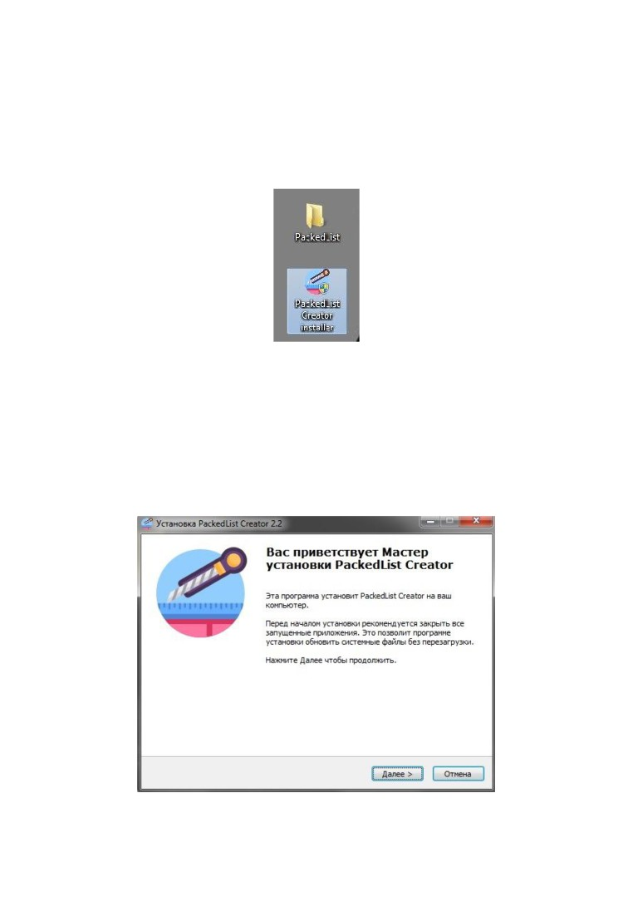
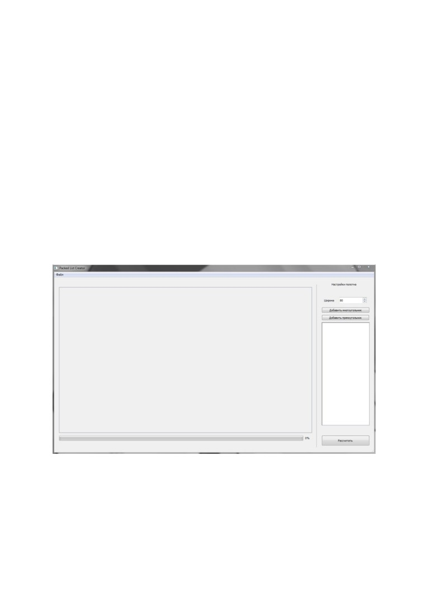
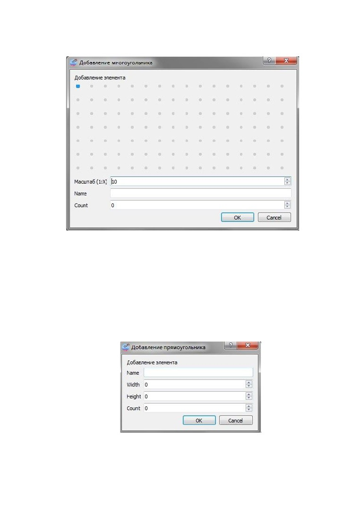
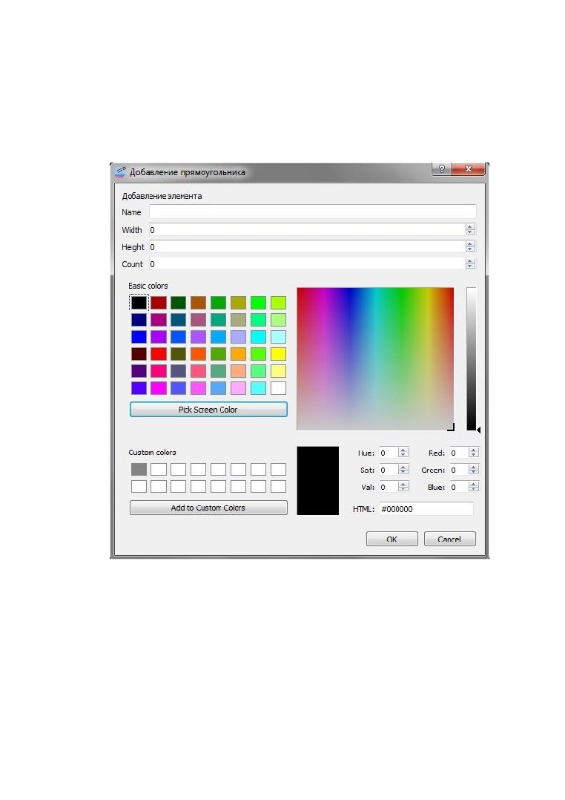
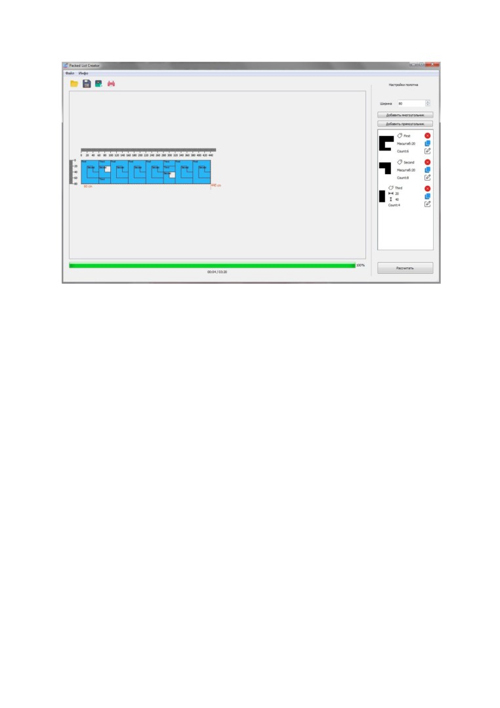
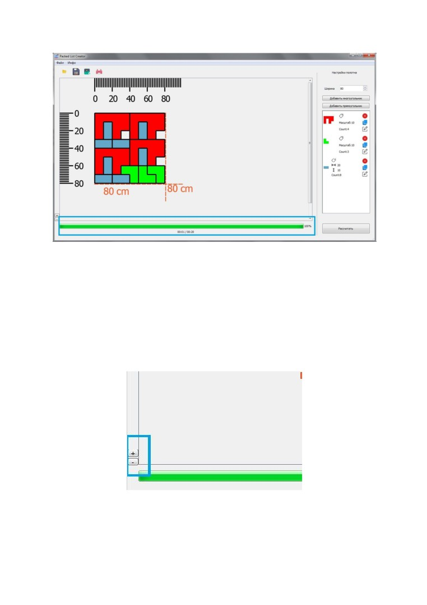
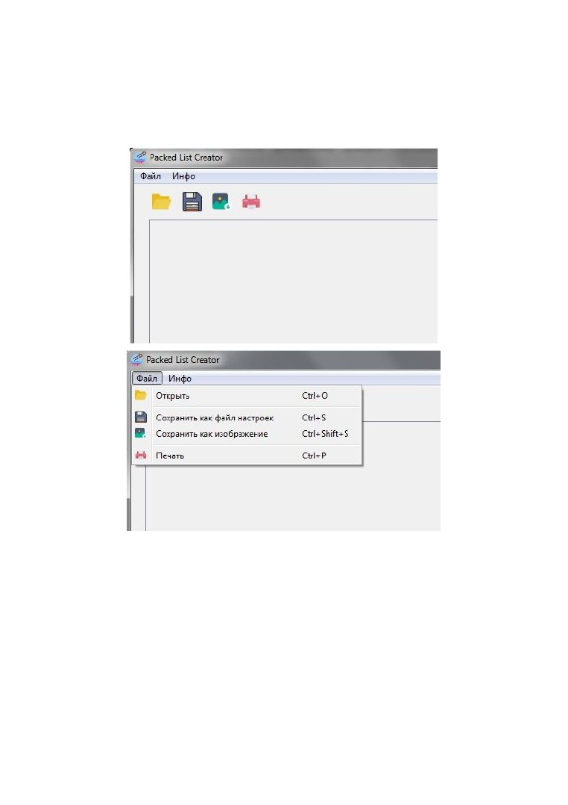
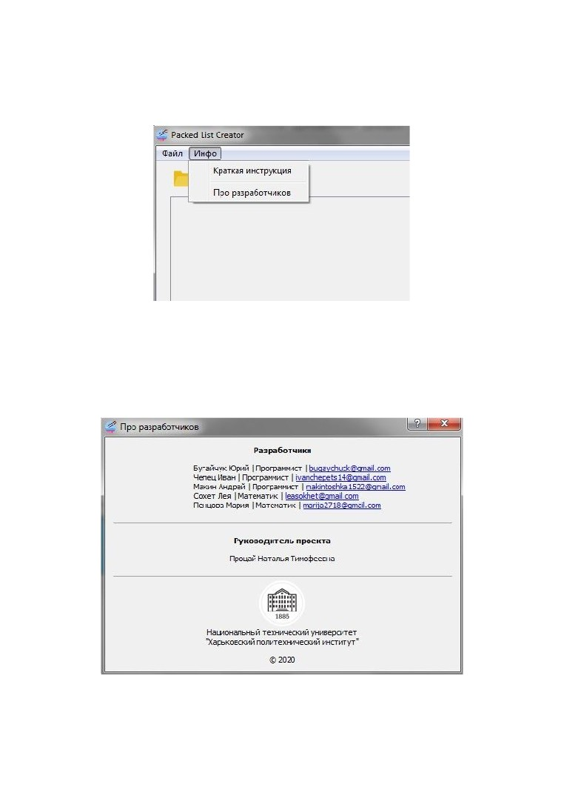

Программа для
создания эскиза
оптимального раскроя
двумерных фигур
Руководство пользователя
Версия от 02 мая 2020
Packed List Creator
Руководство пользователя
Содержание
Введение
3
1.1. Принцип работы.
3
Главное окно
4
2.1. Подготовка к работе
4
2.2. Дизайн и функционал
5
2.3. Дополнительные функции
9
Аварийные случаи
11
Удаление программы
12
2
1. Введение
Packed List Creator - программа, предназначенная для создания эскизов
раскроя материала на основе четко заданных геометрических фигур. Это
позволяет уменьшить затраты времени на создание эскиза при
производстве, исключая необходимость делать это вручную.
1.1. Принцип работы.
После запуска приложения пользователь вводит ширину полотна и
добавляет требуемые детали, которые необходимо разместить на полотне.
Параметры детали: Название, Ширина, Длина, Количество. Добавив все
детали, нажать на кнопку “Рассчитать”. В течении нескольких секунд, на
главной панели появится готовый оптимальный раскрой. После чего,
результат работы программы можно сохранить в формате JPG(*.jpg) или
PNG(*.png).
3

2. Главное окно
2.1. Подготовка к работе
Скачать установщик PackedList Creator Installer (рис. 1).
Рис. 1. Установщик программы.
Запустить установщик и следовать инструкциям по установке.
В процессе установки, пользователя попросят выбрать место, где будет
размещены программные файлы. Далее пользователю будет предложено
Создать ярлык на рабочем столе (рис. 2). Поставив галочку напротив
этого пункта, на рабочем столе появится ярлык приложения, который
будет запускать программу. Если не ставить галочку, то программу
каждый раз придётся запускать из папки, где хранится программа.
Рис. 2. Процесс настраивания и установки программы
4

Нажимаем Далее. Убедившись, что выбрали нужный путь сохранения
файлов, нажимаем Установить. После установки пользователю
предложат вариант Запустить программу Packed List Creator. Убрать
галочку, чтобы не запускать программу сразу после установки. Нажимаем
Готово. Программа установлена и готова к работе. Запустить её можно
либо с ярлыка на рабочем столе, если он был установлен пользователем,
либо с папки, где хранится программа.
2.2. Дизайн и функционал
Запустив приложение PackedList.exe, перед пользователем откроется
программа (рис. 3).
Рис. 3. Дизайн программы
● Настройки полотна включают в себя
1 параметр
- Ширина.
Позволяет задать ширину рулона, на котором размещаем детали.
● Кнопка Добавить многоугольник, при нажатии, открывает новое
окно (рис. 4), в котором пользователь может нарисовать свою деталь
и выбрать её цвет.
5

Рис. 4. Окно конструктора многоугольника
● Масштаб - отношение одной клеточки к введенному значению.
Служит для определения параметров детали( ширины и длины).
● Name - название детали(-ей) данного вида.
● Count - количество элементов данного вида.
● Pick Screen Color - выбрать цвет с экрана
● Add to Custom Colors - добавить в пользовательские цвета
6

● Кнопка Добавить прямоугольник, при нажатии, открывает новое
окно (рис. 5) и позволяет добавить деталь прямоугольной формы,
введя все параметры, а также цвет детали.
Рис. 5. Окно конструктора прямоугольника
● Name - название детали(-ей) данного вида.
● Width - ширина детали (расстояние по вертикали).
● Height - длина детали (расстояние по горизонтали).
● Count - количество элементов данного вида.
● Pick Screen Color - выбрать цвет с экрана
● Add to Custom Colors - добавить в пользовательские
цвета
7

После добавления деталей на экран выводятся их характеристики (рис. 6) :
Рис. 6. Панель характеристик деталей
● (1) - визуальное отображение добавленной детали.
● (2) - операция Удалить деталь
● (3) - операция Копирования всех параметров данной
детали для создания новой.
● (4) - операция Редактирования выбранной детали.
● Кнопка Рассчитать запускает вычисления.
Во время работы программы, снизу есть линия прогресса (рис. 7), которая
показывает как быстро работает программа и сколько осталось до
получения результата.
После окончания работы программы на главной панели появляется
результат - готовый эскиз (рис. 7).
8

Рис. 7. Пример работы программы
● Полоса загрузки(в синей рамке) показывает текущее состояние
работы программы
● Время под полосой загрузки показывает время работы в худшем
случае
Дабы пользователю было виднее как располагаются фигуры, есть
возможность увеличивать/уменьшать размер изображения, пользуясь
кнопками +/- в левой нижней части экрана(рис. 8).
Рис. 8. Функции увеличения/уменьшения изображения
● + - увеличивает изображение
● - - уменьшает изображение
9

2.3. Дополнительные функции
Программа также имеет дополнительные функции. Они находятся в левом
верхнем углу в разделе Файл (рис. 9-10).
Рис. 9-10. Дополнительные функции
● Открыть файл настроек (позволяет открыть ранее сохраненный
список деталей и параметр полотна. Файл хранится в формате JSON
*.json).
● Сохранить как файл настроек (сохраняет список деталей и
параметр полотна, который потом можно Открыть и использовать).
● Сохранить как изображение (сохраняет эскиз в выбранное
пользователем место в формате JPG *.jpg или PNG *.png).
● Печать (непосредственный доступ к принтеру для печати).
10

Для того, чтобы пользователь мог пользоваться правильно и, при не
знании, мог обратиться за помощью - эта инструкция будет доступна из
программы (рис. 11).
Рис. 11. Дополнительная информация
В разделе Про разработчиков находится информация о команде,
трудившийся над данным продуктом (рис. 12). Их именные данные и
почтовые адреса для возможности связаться, если возникнут вопросы или
предложения. Также авторские права на данный продукт.
Рис. 12. О разработчиках.
11
3. Аварийные случаи
Исключив нарушение следующих пунктов, программа будет работать
корректно и пользователь получит результат:
● Не сохраняйте, как фотографию, и не отправляйте на печать
раскрой, во время работы программы.
12
4. Удаление программы
Чтобы удалить программу, потребуется найти папку, где хранится
программа. В данной папке есть файл под названием Uninstall. Это
приложение полностью удаляет PackedList и прилегающие к нему файлы.
Ход действий для удаления программы с компьютера:
1. Запустить приложение Uninstall.
2. В открывшемся окне выбрать папку, в которой установлена
программа.
3. Нажать на кнопку Удалить.
Готово! Программа удалена с компьютера.
13